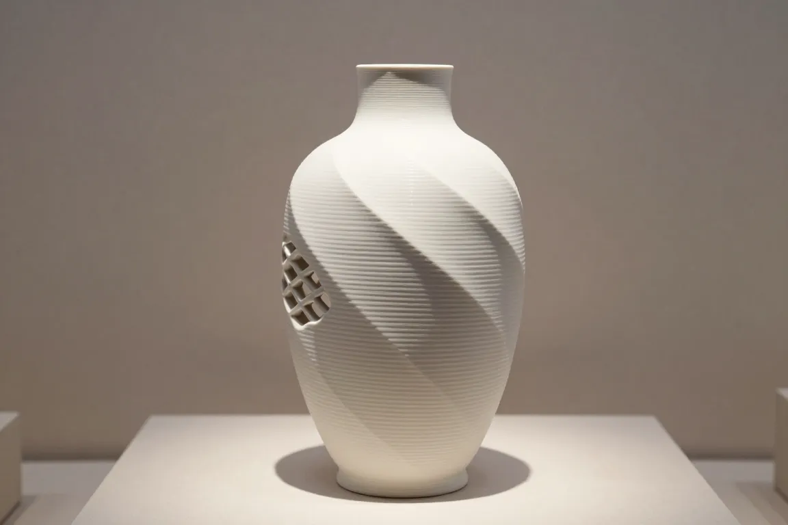

Сосуды, которые машина строит слой за слоем из глиняной пасты по цифровой модели. Вид стилю дают видимые линии слоёв, открытая решётка и сложные кривые.

Главная идея
Когда машина строит форму по файлу, у сосуда может быть форма, которую не сделают ни круг, ни форма для отливки, а линия слоя становится орнаментом.
Принципы дизайна
Рисуйте форму как цифровую модель с параметрическим правилом: закрутка, волна, решётка или градиент.
Печатайте глиняную пасту слоями 0,8–2 мм соплом 1–4 мм.
Оставляйте линии слоёв как текстуру поверхности; не сошлифовывайте их.
Меняйте стенку в одной вещи: сплошное основание, тонкая стенка и открытая решётка наверху.
Печатайте фарфоровую или каменно-массовую пасту, которая держит форму, и сушите медленно 3–7 дней.
Обжигайте вещь за один цикл при 1220–1300 °C, с подпорками из печных вставок там, где она нависает.
Берите тонкую сатиновую или прозрачную глазурь, сохраняющую гребни, или оставляйте поверхность голой.